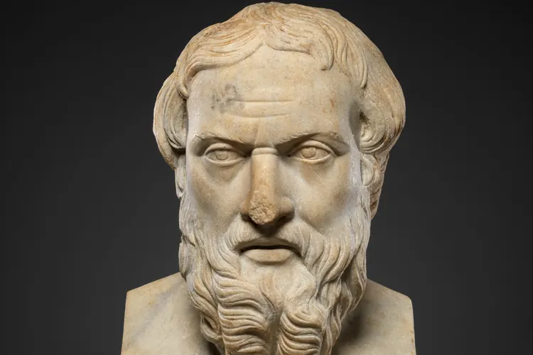

Колонка: можно улучшать внешность и не ненавидеть себя
Сон, спорт и уход за собой работают, а рейтинги, вечное «всё кончено» и ненависть к отражению только мешают жить.

Я открыла приложение для оценки лица в два часа ночи. Не из любопытства: днём коллега сказал, что у меня «уставший вид», и мне захотелось узнать, насколько всё плохо. Алгоритм выдал цифру чуть выше середины шкалы. Я пересняла фото при другом свете, получила на несколько десятых больше и почувствовала облегчение, за которое мне до сих пор неловко.
Эта история хорошо показывает, что я люблю и чего не люблю в луксмаксинге. В нём есть здравое ядро. И есть надстройка, которая это ядро отравляет.
Что стоит забрать себе
Сообщество приучило многих людей к вещам, о которых годами твердили врачи и тренеры. Ложиться в одно и то же время. Поднимать тяжёлое несколько раз в неделю. Пользоваться солнцезащитным кремом, а не вспоминать о нём только в отпуске.
- Сон по расписанию и без телефона в постели.
- Силовые тренировки и прогулки вместо изнурительных диет.
- Базовый уход: очищение, увлажнение, защита от солнца.
- Одежда по размеру и стрижка под ваш тип волос.
Всё это делает человека бодрее и здоровее. Внешность меняется как побочный эффект, и это честный обмен.
Где начинается яд
Проблемы начинаются, когда цифра из приложения становится частью личности. Человек перестаёт говорить «я плохо выспался» и начинает говорить «я на пять из десяти». Оценка, которую алгоритм выдал по одному снимку, превращается в приговор на всю жизнь.
Рядом живёт культура обречённости. На форумах любят писать «всё кончено» под фотографией обычного симпатичного парня. Сравнивают себя при этом не с соседями по подъезду, а с отретушированными снимками, где кожу разгладил фильтр, а челюсть дорисовал редактор. Выиграть у такого соперника невозможно, и дело не в вас: этого соперника просто не существует.
И самое опасное: ненависть к себе выдают за мотивацию. Мол, если достаточно себя презирать, быстрее дойдёшь до зала. На деле презрение толкает к рискованным вещам вроде простукивания скул молотком, голодовок и уколов, купленных в чатах. Ни одна из этих практик не стоит здоровья, а любые вмешательства в тело нужно обсуждать только с врачом.
«Улучшать себя из любви и улучшать себя из ненависти: снаружи это выглядит одинаково, а изнутри это две совершенно разные жизни.»
Привычки вместо цифры
Я предлагаю простую замену: формулировать цель через привычку, а не через балл. Не «поднять рейтинг до восьми», а «спать по семь часов месяц подряд». Привычку вы контролируете полностью, а оценку чужого алгоритма не контролируете вовсе.
Второе: делайте перерывы. Удалите приложения для оценки лица хотя бы на пару недель и посмотрите, что произойдёт с настроением. Я так сделала в августе и заметила, что стала реже разглядывать себя в витринах.
Третье, и это важнее всего. Если мысли о внешности занимают несколько часов в день, мешают учиться, работать или выходить из дома, поговорите с друзьями или с психологом. Существует телесное дисморфическое расстройство (его также называют дисморфофобией). Это состояние, при котором человек зацикливается на воображаемом или едва заметном недостатке. Я никому не ставлю диагнозов, это работа специалиста. Но важно знать, что это расстройство изучено и поддаётся лечению.
Луксмаксинг может быть про заботу. Для этого из него нужно убрать одну деталь: уверенность, что вы недостаточно хороши уже сейчас. Высыпайтесь, тренируйтесь, ухаживайте за кожей. А цифру оставьте алгоритму, ему она нужнее.